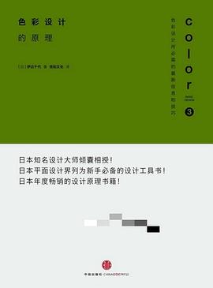

《色彩设计的原理》

总体观点
配色绝不是凭空产生的艺术玄学或虚无缥缈的灵感灵光，而是一套有严密逻辑可循、有量化规律可依的视觉工程学体系。
全书通过‘色彩五步法’，从色彩物理属性（色相、明度、纯度）出发，建立色彩印象坐标，解析色调一致、对比强调、节奏分布与特定氛围营造的核心原理。
通过清晰的正反案例对照，作者揭示了商业设计中配色的决定性作用：控制视觉动线吸引视线、准确传达品牌信任感，并引发用户的消费冲动与情感共鸣。
核心观点
-
1. 色彩的三属性是支配所有配色的基准坐标
色相决定颜色种类，明度决定明暗深浅，纯度决定鲜艳程度；任何配色失控，本质上都是这三个属性在协调或对比上失衡。
想要页面呈现柔和高级的高级灰质感，可以通过大幅降低纯度并统一明度，哪怕使用五种不同色相也不会产生杂乱感。 -
2. 统一色调（Tone）是实现整体协调最稳妥的捷径
色调是明度与纯度的复合体。只要将画面所有元素的色调固定在同一区间（如粉彩色调、暗灰色调），不同色相也能天然融为一体。
绘制一套绘本插画时，将天空蓝、草地绿、小熊棕全部控制在浅淡的马卡龙色调内，整幅画立刻呈现童话般的温馨一致感。 -
3. 支配色与强调色构筑起清晰的视觉层级
遵从经典的70-25-5黄金配色法则：70%大面积基底色、25%辅助色、5%高对比点缀色，引导用户的视线焦点一秒到位。
电商购买页以70%洁白背景衬托商品，25%深灰展现规格文字，仅在立即结算按钮使用5%的亮橙色点缀，转化入口极其显眼。 -
4. 利用前进色与后退色塑造界面的空间进深感
高纯度、高明度的暖色具有视觉膨胀和向前扑来的前进感；低明度、低纯度的冷色则具有收缩和远离的后退感。
UI弹窗背景使用暗色半透明冷灰（后退色），而弹窗确认卡片使用明亮的白色与暖蓝描边（前进色），卡片立刻立体浮现。 -
5. 利用无彩色（黑白灰）与间隔色消灭视觉冲突
当两种高纯度的互补色并列出现刺眼振颤时，在其间插入细细的黑色或白色作为缓冲隔离带，冲突立刻化解为规整的节奏感。
国旗和传统徽章设计中，红色与绿色相交处往往嵌有一道细白边，彻底消灭两种高对比强色并置产生的边缘视觉眩光。 -
6. 色彩承载着深厚的文化共识与特定心理暗示
不同的颜色在人类集体无意识中绑定了特定情绪：蓝色带来理智与安全感，红色激发食欲与紧迫感，绿色传达健康与生命力。
银行金融App清一色采用稳重的深海蓝以传达资信安全，而生鲜超市App则重用翠绿与暖橙唤醒用户对新鲜果蔬的食欲。
全书结构
-
Step 1 色彩的知识
拆解色彩三属性（色相、明度、纯度），辨析光的三原色RGB与印刷四色CMYK，建立冷暖感与色彩心理印象坐标系。
对比在屏幕上极其艳丽的RGB荧光青绿，在转为CMYK印刷时为何会发暗发灰，讲解色域转换对设计打样的重要性。 -
Step 2 取得协调的配色
详解基于色相一致、明度一致、纯度一致的配色法则，学习从大自然色彩中汲取和谐灵感，运用无彩色与渐变色平滑过渡。
展示以枫叶落叶的多层次棕红、姜黄、枯褐为基准，提取出一组天然协调、极具秋季氛围的服饰海报配色盘。 -
Step 3 强调设计的配色
讲授色相对比、明度对比与纯度对比的视觉冲击力，运用强调色、诱目性与前进/后退色法则牢牢抓住观者眼球。
在全黑白调性的严肃新闻摄影海报中，唯独将抗议者手中的红玫瑰保留鲜艳红色，强烈的纯度对比让反差直击心灵。 -
Step 4 赋予特定印象的配色
系统归纳平静/热烈、自然/人造、季节感、甜美/冷冽、高级/低档等特定文化与情感氛围的标准配色公式与案例剖析。
奢华护肤品采用黑金搭配与低饱和香槟色传递沉稳尊贵感，儿童玩具包装采用高明度红黄蓝三原色传递快乐纯真。 -
Step 5 配色的实践
从理论走向商业实战：分析受众目标人群定位、大面积色彩把控技巧、流行色预测机制与促进消费购买欲望的用色心法。
针对快消品打折大促页面，将原本素雅的蓝白冷色系全面重构成醒目的红黄高对比撞色，显著激发用户的冲动购买欲望。